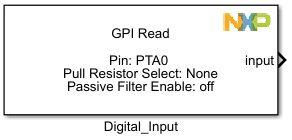
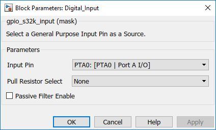

Digital Input Block
The main functionality of the block is to configure a single pin as a General Purpose Input.
Block Image
Inputs:
- None
Outputs:
- Input signal level (boolean)
Parameters and Dialog Box
Input Pin
Various GPIO pins.
For usability the Input Pin selection is displayed as: (Port Name : [Function : Description]) format.
Pull Resistor Select
Internal pullup or pulldown resistor is enabled on the Selected pin.
- None
- Pulldown
- Pullup
Passive Filter Enable
Passive input filter is enabled on the corresponding pin. Refer to the device data sheet for filter characteristics.
Block Dependency
- None
Block Miscellaneous Details
- None